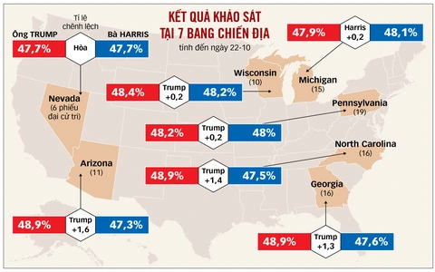
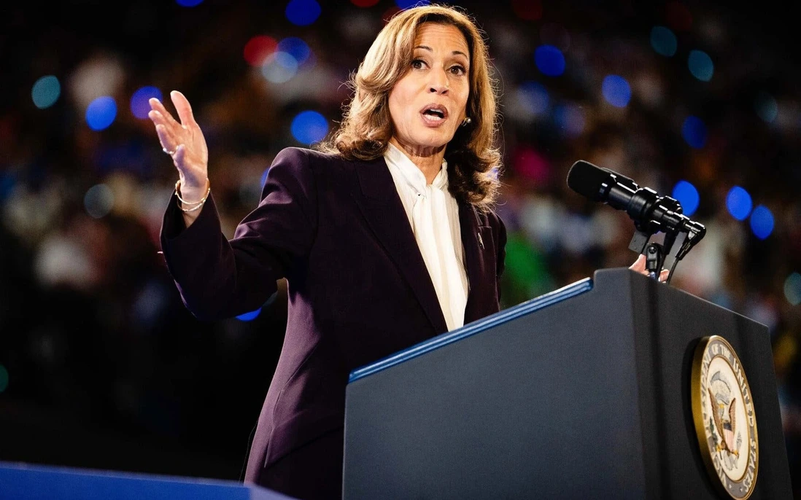

Cựu Tổng thống Donald Trump trong ngày 26/10 (giờ địa phương) đã có cuộc mít tinh gây ấn tượng đối với các cử tri người Mỹ gốc Arab và người Hồi giáo ở bang Michigan, một tiểu bang dao động với gần 400.000 cử tri gốc Arab.
Đương kim Tổng thống Joe Biden đã giành đa số phiếu tại tiểu bang này trong cuộc bầu cử năm 2020, tuy vậy, việc cử tri tại đây không hài lòng về cuộc chiến của Israel tại Gaza và Lebanon có thể ảnh hưởng đến tỷ lệ cử tri ủng hộ bà Harris, ứng viên đảng Dân chủ.
Michigan là một trong 7 tiểu bang cạnh tranh của Mỹ có khả năng quyết định người chiến thắng trong cuộc bầu cử. Đây là một phần của “bức tường xanh”, được coi là cơ hội tốt nhất của đảng Dân chủ giành lợi thế, cùng với Pennsylvania và Wisconsin.
Bà Harris cũng đã vận động tranh cử tại Michigan ngày 26/10, cảnh báo rằng ông Trump sẽ sử dụng “quyền lực không bị kiểm soát và cực đoan” nếu ông trở lại Nhà Trắng.
Một cuộc thăm dò do Emerson College Polling công bố mới đây cho thấy hai ứng viên Harris và Trump đang ở vị thế cân bằng, với 49% phiếu ủng hộ mỗi bên.
Cuộc khảo sát được tiến hành vào ngày 23-24/10 cho thấy cuộc đua sẽ gay cấn hơn so với một tuần trước đó, khi kết quả cho thấy bà Harris dẫn trước ông Trump với tỷ lệ 49,7% so với 49,1%. Đây cũng là lần đầu tiên kể từ tháng 8 mà bà Harris không dẫn đầu trong cuộc thăm dò hàng tuần của Emerson
Spencer Kimball, giám đốc điều hành của Emerson College Polling cho biết, các cử tri nam đang thiên về ông Trump hơn, trong khi các cử tri nữ lại ủng hộ bà Harris nhiều hơn. Cuộc khảo sát mới nhất cũng cho thấy rằng, 50% cử tri Mỹ nghĩ rằng ông Trump sẽ thắng cử.
Kết của cuộc thăm dò cũng liệt kê các vấn đề mà cử tri quan tâm hàng, bao gồm: kinh tế (45%), nhập cư (14%), các mối đe dọa đối với nền dân chủ (14%), quyền phá thai (7%), chăm sóc sức khỏe (6%) và tội phạm (4%).
Trong khi đó, số liệu trung bình hàng ngày mới nhất của FiveThirtyEight cho thấy bà Harris dẫn đầu trong các cuộc thăm dò toàn quốc, 47,9% so với 46,6% của ông Trump.
Bà Harris đã vận động tranh cử ở Michigan cùng cựu Đệ nhất phu nhân Michelle Obama, người đã khuấy động đám đông những người ủng hộ đảng Dân chủ thông qua việc chỉ ra sự khác biệt giữa hai ứng viên về tính cách và trình độ cá nhân.
Bà Obama cảnh báo rằng “một nhiệm kỳ nữa dưới thời ông Trump sẽ dẫn đến việc quyền phá thai bị đảo ngược”. Bà cho biết, lời hứa của ông Trump về việc hủy bỏ Đạo luật Chăm sóc Giá cả phải chăng được thông qua trong thời kỳ ông Barack Obama sẽ ảnh hưởng đến “toàn bộ sức khỏe của phụ nữ, cũng như tất cả mọi người”.
Bà Harris đã có một bài phát biểu với tông giọng lạc quan, tuy nhiên, sau đó bị một người biểu tình ngắt lời khi người này liên tục hét lên: “Chấm dứt chiến tranh tại Gaza”.
Cũng trong chiến dịch ở Michigan, ông Trump đã gặp một nhóm nhà truyền giáo Hồi giáo, lập luận rằng ông xứng đáng nhận được sự ủng hộ của cử tri Hồi giáo vì ông sẽ chấm dứt xung đột và mang lại hòa bình cho Trung Đông.
Theo các phương tiện truyền thông Mỹ, ông Trump là người ủng hộ mạnh mẽ Israel và từng nói với Thủ tướng Israel Benjamin Netanyahu “hãy làm những gì ông phải làm khi giải quyết vấn đề Hamas ở Gaza và Hezbollah ở Lebanon”....
Đọc bài viết đầy đủ tại: Đếm ngược đến ngày bầu cử Tổng thống Mỹ